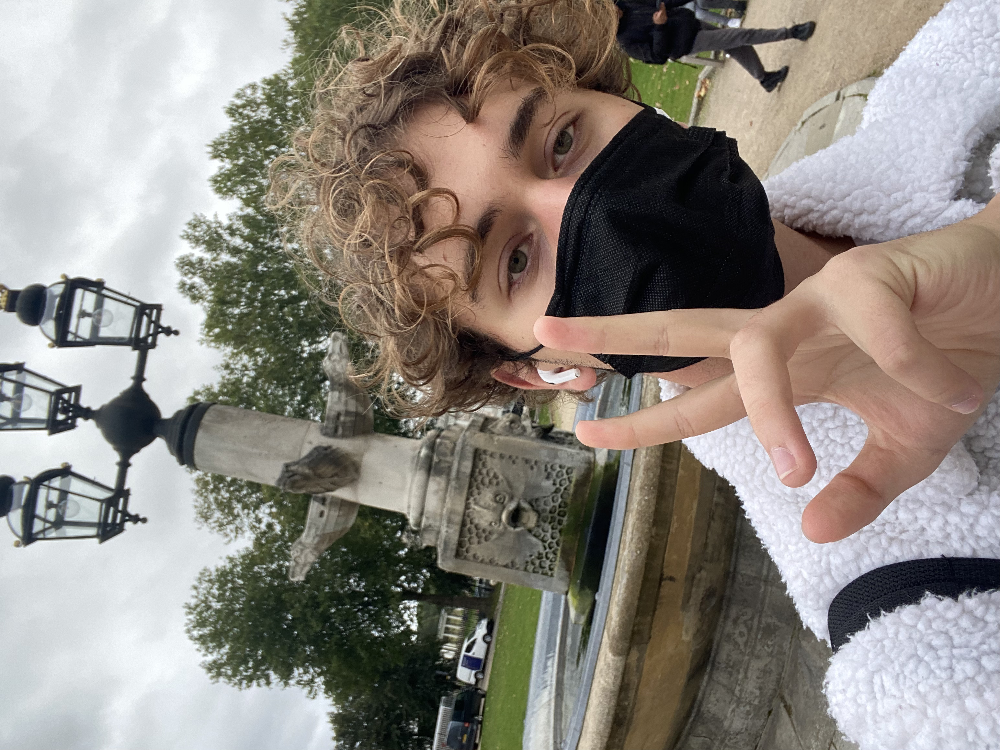
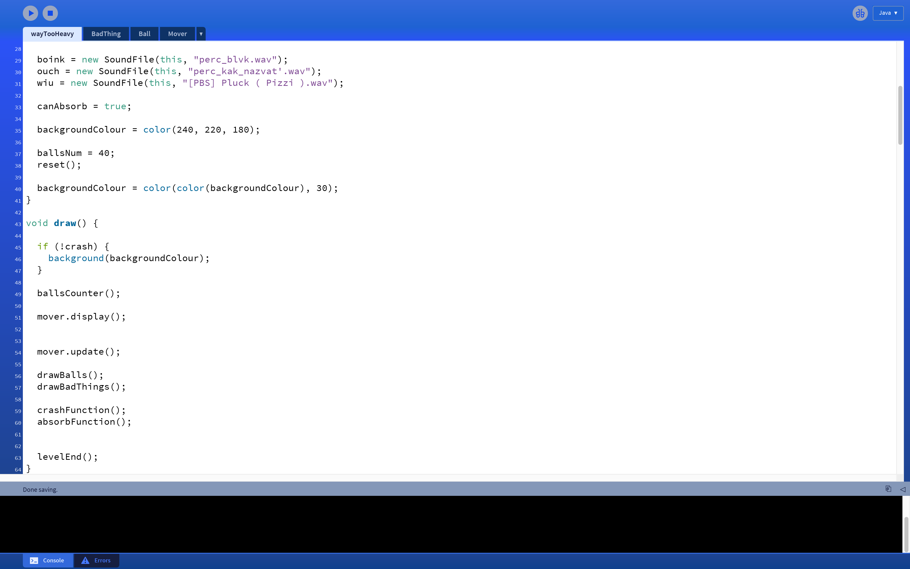
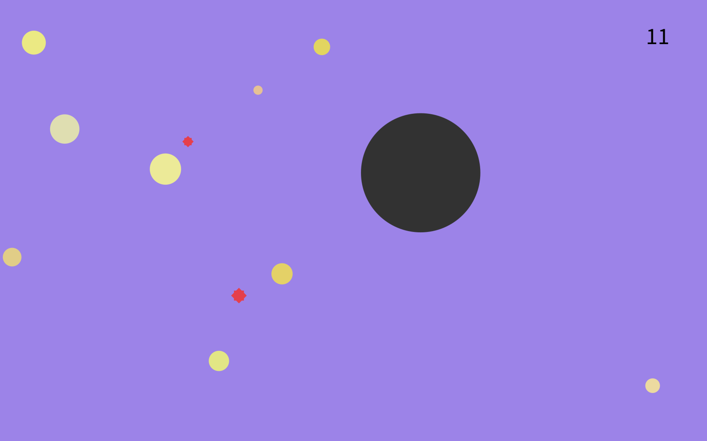
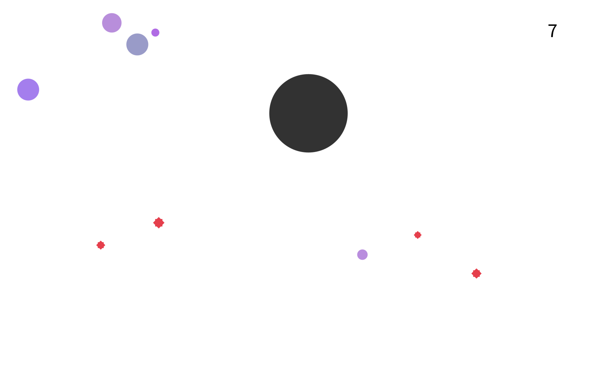

Vladimir TregubiakMy name is Vladimir and I come from Russia. Despite not having any of the experience in java before the bootcamp-2021 programme, I have managed to create a simple game with a well-known concept yet reinvented mechanics. |
 | |
|
|
||
Bootcamp 2021: Way too heavyThe project is an attempt to approach the famous concept of agar.io type game in a new way. The code uses many concepts I have learned during the bootcamp, but the most important and complex ones are "for loops", conditionals and 2D Arrays. The last one has enabled me to induce a physics-like properties to an object (acceleration, weight), which makes the game more interesting and even hard at times. You will see that there are multiple levels in this game, and each level brings something new into gameplay, which by the way, should be quite intuitive. Check out the code on Github: https://github.com/selensince1817/selensince1817/ | ||
|    | ||